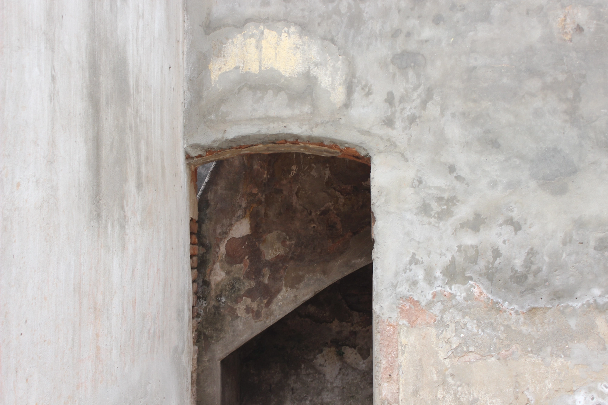

Photo credit : Parsa Sanjana Sajid
Digital Social Space & Organizing
Authored
EROTICS South Asia Regional Monitoring Survey: Bangladesh Country Report
Experiences and Expectations of Gender Diverse Communities in Bangladesh - A Rapid Survey
A Snapshot from Bangladesh: Online Activities and Experiences of Gender Diverse Communities
Facilitated Workshops & Zines
Storytelling workshops
Freedom of expression
Reflections on Hate Speech and Other Thoughts
Internet governance
Up and Down the Internet Lanes